長期トレンド
JKMとJEPXシステムプライスの推移グラフ
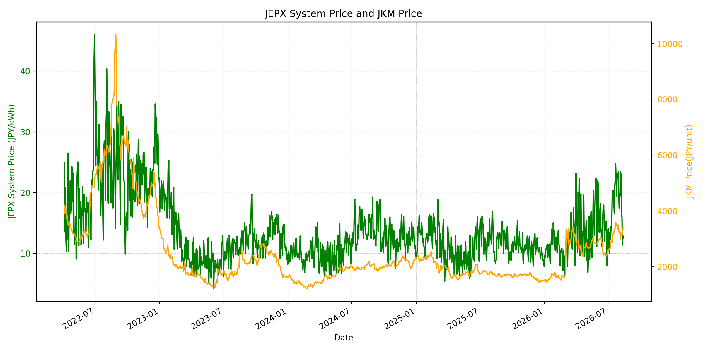
WTIの推移グラフ
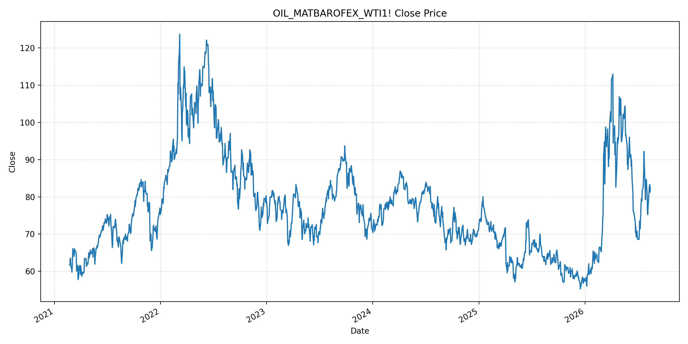
JEPXエリアプライスグラフ（直近一年分）
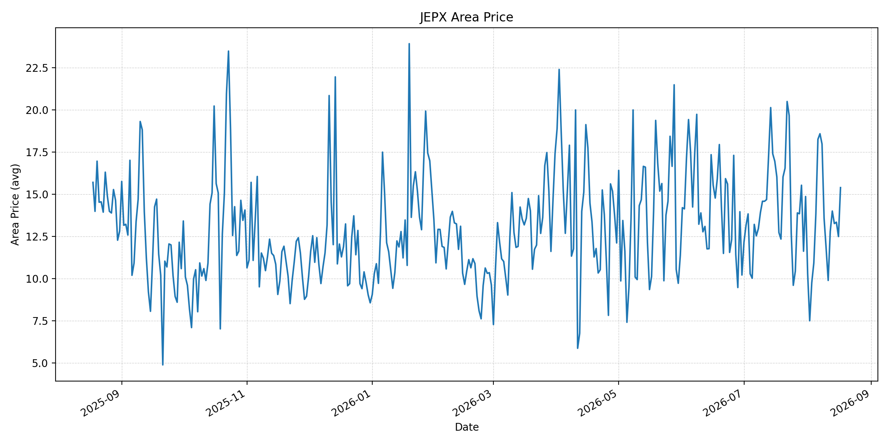
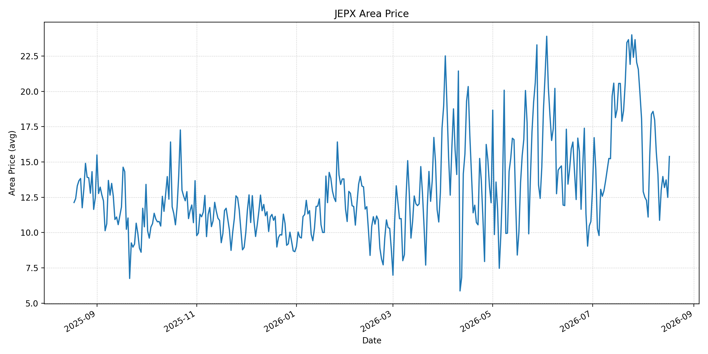
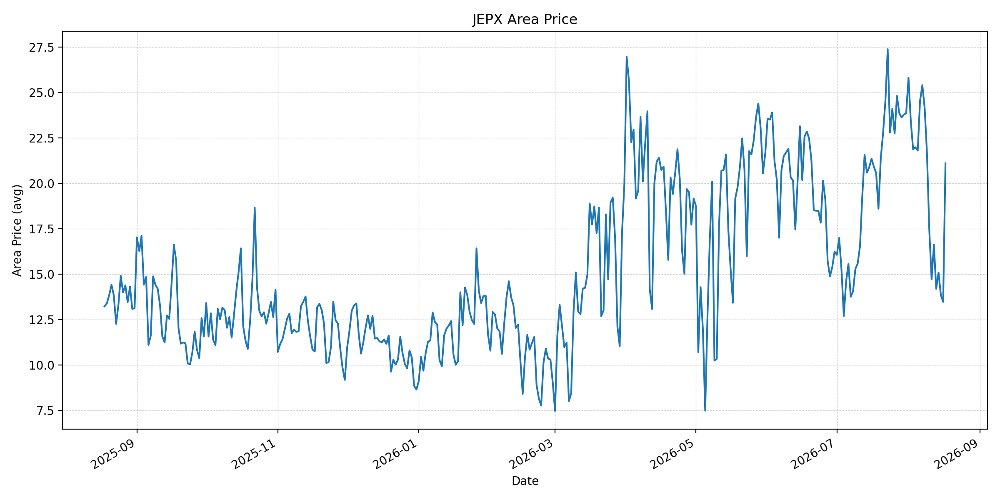
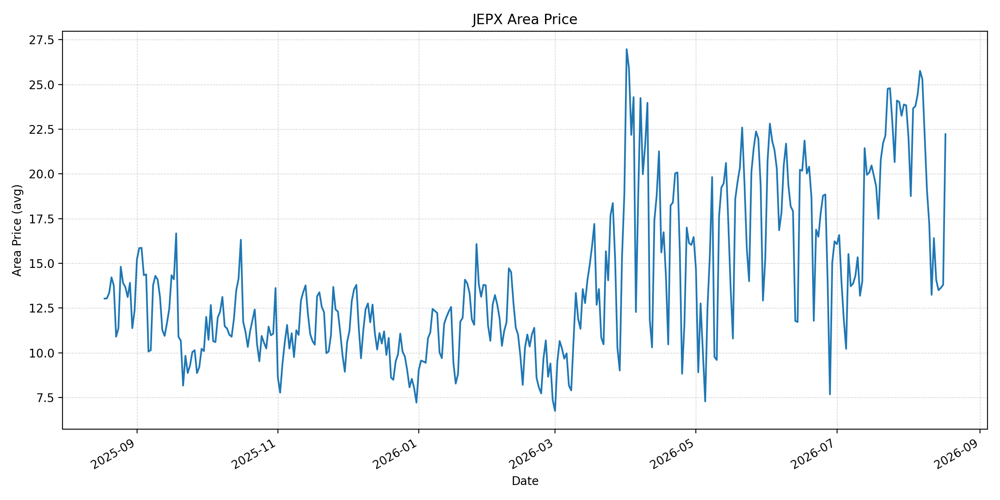
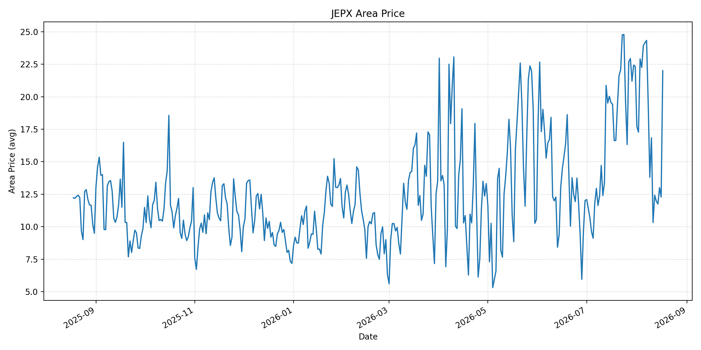
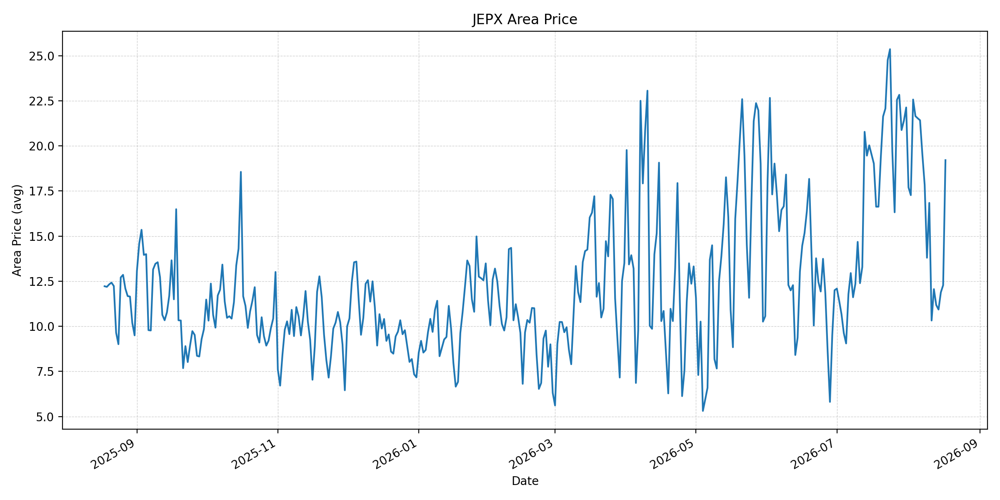
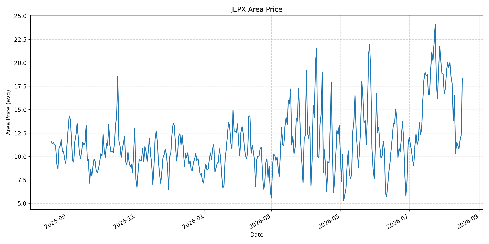
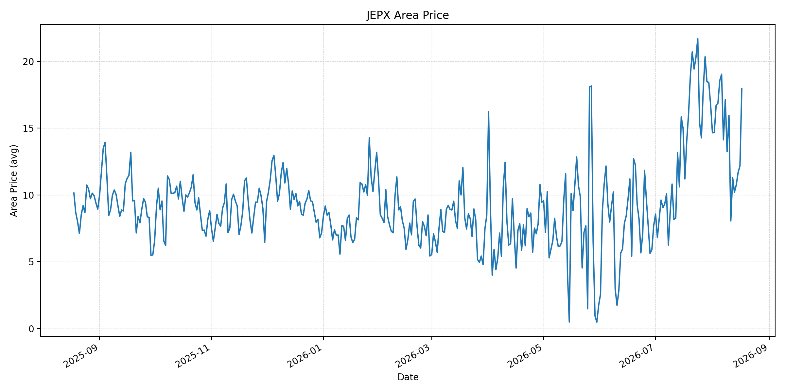
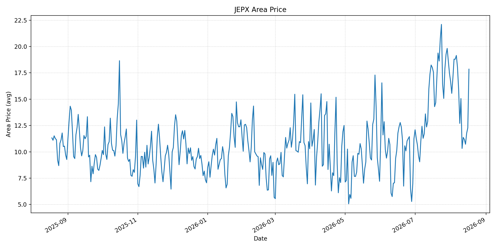
短期トレンド
JKMとJEPXシステムプライスの推移グラフ
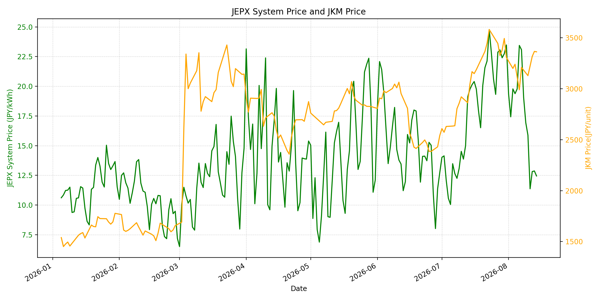
WTIの推移グラフ
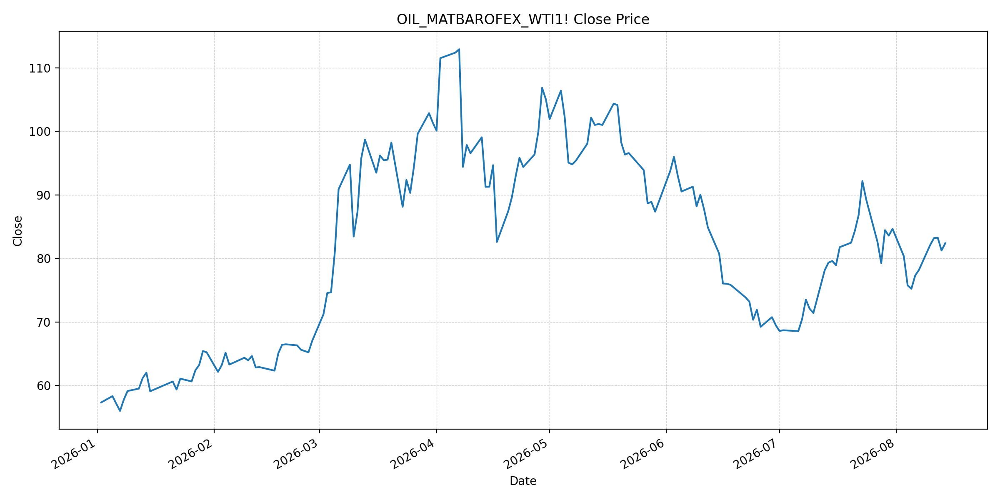
JEPXシステムプライス
JEPXは受渡日ベースの最新非空値で評価しています。最新値は 2026-08-17 分です。先週終値は 2026-08-10、先月終値は 2026-07-31 時点の直近値で評価しています。
| エリア | 当日価格 | 前日価格 | 前日比（％） | 先週終値 | 先週比（％） | 先月終値 | 先月比（％） | 過去最高値 | 最高値比（％） |
|---|---|---|---|---|---|---|---|---|---|
| システム | 19.63 | 12.76 | 53.84 | 15.88 | 23.61 | 23.48 | -16.40 | 64.06 | -69.36 |
| 北海道 | 15.39 | 12.49 | 23.22 | 11.79 | 30.53 | 14.86 | 3.57 | 73.92 | -79.18 |
| 東北 | 15.39 | 12.49 | 23.22 | 14.13 | 8.92 | 18.04 | -14.69 | 84.92 | -81.88 |
| 東京 | 21.10 | 13.47 | 56.64 | 17.45 | 20.92 | 23.85 | -11.53 | 86.13 | -75.50 |
| 中部 | 22.22 | 13.80 | 61.01 | 17.17 | 29.41 | 23.83 | -6.76 | 52.06 | -57.32 |
| 北陸 | 22.00 | 12.28 | 79.15 | 16.84 | 30.64 | 22.32 | -1.43 | 46.48 | -52.67 |
| 関西 | 19.21 | 12.28 | 56.43 | 16.84 | 14.07 | 22.13 | -13.19 | 46.48 | -58.67 |
| 中国 | 18.37 | 12.28 | 49.59 | 16.50 | 11.33 | 18.78 | -2.18 | 46.48 | -60.48 |
| 四国 | 17.95 | 12.18 | 47.37 | 15.97 | 12.40 | 16.74 | 7.23 | 46.48 | -61.39 |
| 九州 | 17.85 | 12.28 | 45.36 | 15.06 | 18.53 | 17.46 | 2.23 | 40.54 | -55.97 |
LNG先物価格
最新値は 2026-08-14 の LNG(close) です。前日価格は 2026-08-13、先週終値は 2026-08-07、先月終値は 2026-07-31 時点の直近値で評価しています。
| 当日価格 | 前日価格 | 前日比（％） | 先週終値 | 先週比（％） | 先月終値 | 先月比（％） | 過去最高値 | 最高値比（％） |
|---|---|---|---|---|---|---|---|---|
| 3363.00 | 3367.00 | -0.12 | 3210.00 | 4.77 | 3307.00 | 1.69 | 10319.00 | -67.41 |
石油先物価格
最新値は 2026-08-14 の OIL(close) です。前日価格は 2026-08-13、先週終値は 2026-08-07、先月終値は 2026-07-31 時点の直近値で評価しています。
| 当日価格 | 前日価格 | 前日比（％） | 先週終値 | 先週比（％） | 先月終値 | 先月比（％） | 過去最高値 | 最高値比（％） |
|---|---|---|---|---|---|---|---|---|
| 82.40 | 81.25 | 1.42 | 78.18 | 5.40 | 84.67 | -2.68 | 123.70 | -33.39 |
ニュース
イラン情勢に関するニュース
- 過去24時間で、イラン情勢に関する主要な新規公表は確認できませんでした。直近では、UAEがホルムズ通航中の国営石油会社タンカーへのドローン攻撃をイランの行為と非難しています。参照: AP, 2026-08-14
- 8月15日もUAEは同海峡で自国船舶が再び攻撃されたと表明し、イランとカタールをめぐる緊張も報じられました。外交的な不確実性は引き続き高い状態です。参照: AP, 2026-08-15
ホルムズ海峡経由の石油・LNGに関するニュース
- UAE国営ADNOCのタンカー2隻は8月14日、ホルムズ海峡通航中にドローン攻撃を受け小規模な損傷を受けました。死傷者はなかったものの、航行リスクが継続していることを示します。参照: AP, 2026-08-14
- 米国は原油通過量の増加を示していますが、実際の航行安全、保険料、船腹確保は回復の制約です。LNGはパイプラインで代替しにくく、船舶リスクの影響を受けやすい状態が続きます。参照: AP, 2026-08-11
ホルムズ海峡経由でない石油・LNGに関するニュース
- フーシ派は紅海の港湾を再び攻撃しており、ホルムズの代替となるバブエルマンデブ経由の輸送にもリスクが残ります。参照: AP, 2026-08-15
- オマーン沖とイラン沖では油流出の対応も続いており、事故対応は航路運用の追加的な不確実性です。参照: AP, 2026-08-13
日本国内のイラン戦争に関係するニュース
- 過去24時間で、JEPX制度、国内電力需給ルール、または日本政府のイラン戦争関連対策を直接変更する主要な新規公表は確認できませんでした。
- 日本政府は備蓄活用により2027年度末まで安定供給が可能との見通しを示しています。供給量の緩衝材になりますが、輸送コスト上昇を排除するものではありません。参照: METI, 2026-06-16
インサイト
ニュース事項による日本の電力市場への影響（短期：数日〜1週間）
- JEPXシステムプライスは 19.63 円/kWhで前日比 53.84%、先週比 23.61% と上昇しました。東京 21.10 円/kWh、中部 22.22 円/kWh、北陸 22.00 円/kWhも大幅に上昇し、足元の地域需給は引き締まっています。
- LNGは 3363.00 で先週比 4.77%、WTIは 82.40 ドルで 5.40% 上昇しています。タンカー攻撃が続くため、通航量の回復報道があっても燃料プレミアムの縮小は限定されやすい状況です。
- 数日から1週間は、海峡と紅海双方の船舶安全が燃料コストの上振れ要因となります。JEPXの急反発は燃料要因だけでなくエリア需給も反映するため、地域別の動きを分けて見る必要があります。
ニュース事項による日本の電力市場への影響（長期：1ヶ月〜半年）
- JEPXシステムは先月比 -16.40%、LNGは 1.69%、WTIは -2.68% です。恒常的な安全航路が確立されれば火力限界費用の低下要因になりますが、攻撃の再発が続けば輸送・保険コストは高止まりします。
- 北海道は先月比 3.57%、四国 7.23%、九州 2.23% と上昇する一方、東京 -11.53%、中部 -6.76%、関西 -13.19% と低下しており、燃料価格の地域への波及は一様ではありません。
- 過去最高値比ではシステム -69.36%、LNG -67.41%、WTI -33.39% です。1ヶ月から半年は、実通航量、紅海航路の安全、国内在庫の補充ペースを分けて監視することが重要です。